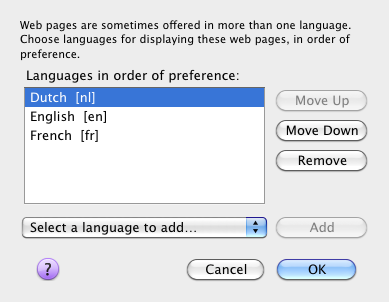
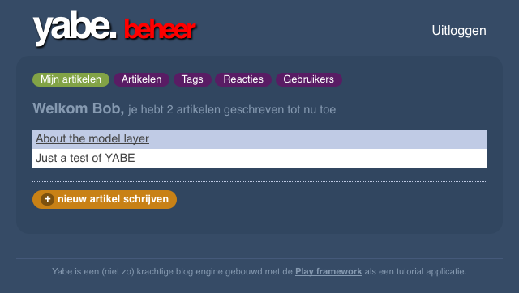
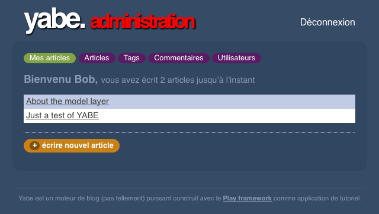

Internationalisation and localisation
Having built our fully-functional blog engine, we will now consider an optional extra: web application internationalisation and language localisation. Although we could have done this from the start, it is more realistic to build the first version of an application in a single language, and add multiple languages later.
Internationalisation and localisation
There are two steps to perform: internationalisation and localisation. Both are mostly about text.
Internationalisation, in programming terms, is a refactoring to remove locale-specific code from the application code. In a web application, this is almost entirely about replacing user-interface text in view templates with references to messages. It also includes formatting non-text data types: dates, currency and other numbers.
Localisation is making a locale-specific version of an application. If the application is internationalised, this means having one or more selectable locale-specific versions. In a web application, this localisation is mostly about translating the user-interface text into the chosen natural language. Language selection is typically a combination of language preferences set in the web browser, and a language selection user-interface in the application itself.
In practice, the two steps go together: you both internationalise and localise one part of the application at a time.
Yet Another Blog Engine
The starting point for this section is the finished tutorial code, which you can find in the Play distribution’s samples-and-tests/yabe directory. The goal is to fully internationalise the application, and add French and Dutch language localisations.
To get started, first edit conf/application.conf and uncomment (in the default configuration file) or add a line with three supported languages:
# Localisations for English, Dutch and French.
application.langs=en,nl,fr
If you load a page in the application now, the Play console will show three warnings because you do not have any locale-specific message files yet:
16:19:04,728 WARN ~ Messages file missing for locale en
16:19:04,729 WARN ~ Messages file missing for locale nl
16:19:04,729 WARN ~ Messages file missing for locale fr
UTF-8 message files
The warnings above mean that you need to replace the existing conf/messages file with one message file for each language:
messages.enmessages.nlmessages.fr
At this point we encounter the first improvement over the normal Java way of doing things. These files use the same syntax as Java properties files, but they are not properties files because they must use UTF-8 encoding. Java Properties, on the other hand, specifies ISO-8859-1 ‘Latin-1’ character encoding for streaming to and from text files.
Being able to use UTF-8 message files is a big deal for language localisation, because it means that you can write localised language messages in ‘plain text’. For example, this means that for a Greek localisation, instead of:
hello.morning = \u0152\u222b\u0152\u00b1\u0152\u00aa\u0152\u2211\u0152\u00ba\u0152\u2260\u0153\u00c5\u0152\u00b1
hello.informal = \u0152\u2265\u0152\u00b5\u0152\u03c0\u0152\u00b1 \u0153\u00c9\u0152\u00f8\u0153\u00d6
you can use Greek letters instead of those Unicode character escapes:
hello.morning = καλημέρα
hello.informal = γεια σου
For the rest of this tutorial, code samples will either define messages in one of these files, or show internationalised mark-up in one of the HTML view templates.
Simple messages
The simple case is a text string that does not change, and that is not interrupted by other markup. For example, the first such text in the yabe/app/views/main.html template, in the tools list:
<ul id="tools">
<li>
<a href="@{Admin.index()}">Log in to write something</a>
</li>
</ul>
To internationalise this, we replace the text with a message look-up, using the &{'key'} syntax:
<ul id="tools">
<li>
<a href="@{Admin.index()}">&{'views.main.tools.login'}</a>
</li>
</ul>
To add the localisations, add the corresponding line in each of the three message files. In conf/messages.en
views.main.tools.login = Log in to write something
In conf/messages.nl
views.main.tools.login = Inloggen om iets te schrijven
In conf/messages.fr
views.main.tools.login = Connectez-vous pour écrire quelque chose
The message key can be anything you like; in this example I have used a key to indicate the location views/main.html#tools
Once you have saved these changes, you can see the different language versions in your web browser by changing the setting that results in a different Accept-Language HTTP request header. In Firefox, select Preferences » Content » Languages » Choose…, add French [fr] and Dutch [nl] if they are not already in the list, change which one is at the top of the list, close the dialogue box and reload the page.

Application model localisation
If you use that link to log in to the blog’s ‘admin’ pages, you can access lists of posts, tags, comments and users. These pages are provided by the CRUD module. For each of these pages, the title (light pink) and the column headers are terms from the application’s model, i.e. JavaBean class and property names.
The CRUD module internationalises these names using the JavaBean class or property name as the message key, which means you can localise them with messages such as the following.
In conf/messages.nl
post = artikel
Post = Artikel
posts = artikelen
Posts = Artikelen
comment = reactie
Comment = Reactie
comments = reacties
Comments = Reacties
user = gebruiker
User = Gebruiker
users = gebruikers
Users = Gebruikers
In conf/messages.fr
post = article
Post = Article
posts = articles
Posts = Articles
comment = commentaire
Comment = Commentaire
comments = commentaires
Comments = Commentaires
user = utilisateur
User = Utilisateur
users = utilisateur
Users = Utilisateurs
You will notice that this does not change the rounded purple navigation links:
Those are defined in views/admin.html which you can internationalise to use the same localisations simply by surrounding the existing text with &{'…'} as follows:
<a href="@{Posts.list()}">&{'Posts'}</a>
…
<a href="@{Tags.list()}">&{'Tags'}</a>
…
<a href="@{Comments.list()}">&{'Comments'}</a>
…
<a href="@{Users.list()}">&{'Users'}</a>
Parameterised messages
As well as simple messages, our application includes messages that contain a variable, such as Posts tagged with Play
To localise a message that contains a single parameter, use a Java format string to insert the parameter value in the message:
views.Application.listTagged.title = Posts tagged with %s
and in the template, add the parameter like this:
&{'views.Application.listTagged.title', tag}
When a message contains multiple parameters, add an index to the format string to allow for different word order in another language:
views.Admin.index.welcome = Welcome %1$s, <span>you have written %2$s posts so far</span>
… with a list in the template:
&{'views.Admin.index.welcome', user, posts.size()}
In this example, we would also like to use the correct plural form for the word ‘post’, so make that word a parameter too:
views.Admin.index.welcome = Welcome %1$s, <span>you have written %2$s %3$s so far</span>
… and use the pluralize extension in the template
&{'views.Admin.index.welcome', user, posts.size(), posts.pluralize(messages.get('post'), messages.get('posts'))}
Note that we have to use messages.get to look up the localised singular and plural.
Play module localisation
Play module localisation works the same way as localisation within your application. This application uses the CRUD and Secure modules, which means that we must localise the messages in play/modules/crud/conf/messages and play/modules/secure/conf/messages that our application uses.
In conf/messages.nl
# play/modules/crud (administration)
crud.title = Beheer
crud.home = Home
crud.blank = Nieuw
crud.index.title = Kies het te bewerken object
crud.index.objectType = Type object
crud.index.action =
crud.index.add = Voeg toe
crud.add = &{%s} toevoegen
crud.list.title = &{%s}
crud.list.size = %d &{%s}
crud.list.totalSize = %d totaal
crud.pagination.previous = « Vorige
crud.pagination.next = Volgende »
crud.pagination.last = Laatste »»
crud.pagination.first = «« Eerste
crud.show.title = &{%s} bewerken
crud.save = Opslaan
crud.saveAndContinue = Opslaan en verder bewerken
crud.cancel = Annuleren
crud.hasErrors = Corrigeer fouten a.u.b.
crud.blank.title = &{%s} toevoegen
crud.saveAndAddAnother = Opslaan en nogmaals creëren
crud.delete = &{%s} verwijderen
crud.created = &{%s} is aangemaakt
crud.saved = &{%s} is opgeslagen
crud.deleted = &{%s} is verwijderd
crud.delete.error = Kan dit object niet verwijderen
crud.search = Zoeken
crud.none = (Geen)
crud.help.required = Verplicht.
crud.help.minlength = Min. lengte is %d.
crud.help.maxlength = Max. lengte is %d.
crud.help.email = Geldig e-mailadres
crud.help.dateformat = In de vorm YYYY-MM-DD.
crud.help.numeric = Numeriek.
crud.help.min = Moet groter daan %d zijn.
crud.help.future = In de toekomst.
crud.help.past = In het verleden.
crud.help.after = Na %s.
crud.help.before = Voor %s.
crud.help.range = Tussen %d en %d
# play/modules/secure
secure.username = Uw e-mailadres:
secure.password = Uw wachtwoord:
secure.signin = Nu inloggen
In conf/messages.fr
# play/modules/crud (administration)
crud.title = Administration
crud.home = Home
crud.blank = Nouveau
crud.index.title = Choisissez l'objet à modifier
crud.index.objectType = Type objet
crud.index.action = XXX
crud.index.add = Ajouter
crud.add = Ajouter &{%s}
crud.list.title = &{%s}
crud.list.size = %d &{%s}
crud.list.totalSize = %d total
crud.pagination.previous = « Précédent
crud.pagination.next = Suivant »
crud.pagination.last = Dernier »»
crud.pagination.first = «« Premier
crud.show.title = Modifier &{%s}
crud.save = Enregistrer
crud.saveAndContinue = Enregistrer et continuez à modifier
crud.cancel = Annuler
crud.hasErrors = Corrigez les erreurs s.v.p.
crud.blank.title = Ajouter &{%s}
crud.saveAndAddAnother = Enregistrer et ajouter un autre
crud.delete = Supprimer &{%s}
crud.created = &{%s} a été crée
crud.saved = &{%s} est enregistré
crud.deleted = &{%s} est supprimé
crud.delete.error = Ne peut pas supprimer l’objet
crud.search = Chercher
crud.none = (aucun)
crud.help.required = Obligatoire.
crud.help.minlength = Longeur minimum est %d.
crud.help.maxlength = Longeur maximum est %d.
crud.help.email = Adresse e-mail valide
crud.help.dateformat = En format YYYY-MM-DD.
crud.help.numeric = Numerique.
crud.help.min = Doit être plus grand que %d.
crud.help.future = Dans le futur.
crud.help.past = Dans le passé.
crud.help.after = Après %s.
crud.help.before = Avant %s.
crud.help.range = Entre %d et %d
# play/modules/secure
secure.username = Votre adresse e-mail:
secure.password = Votre mot de passe:
secure.signin = Connectez-vous maintenant
Of course, once you have done this it is also a good idea to contribute the localisations back to the module.
Special cases
When you are localising a web application, there are a few special cases that can be awkward to implement if you are using a component-based web application framework, such as JavaServer Faces:
- Parameterised message used in an attribute value
- Formatted message parameter
- Link within message
All three cases turn out to be straightforward in Play.
The first case happens when you want to use a phrase with a parameter in an attribute value in the template, such as:
<a href="@{Application.show(_post.id)}" title="By Bob">
This is a problem in JSF, because you would normally use an XML tag to perform the parameter replacement, which you cannot do in an attribute value. The Play syntax simply avoids this problem, and you can just do:
<a href="@{Application.show(_post.id)}" title="&{'views.tags.display.author', _post.author.fullname}">
The second case is when you want to format a value, such as a date, for use as a message parameter in a phrase like By Bob on 2009-06-14. Again, the problem in JSF is caused by having to use an XML tag to format the value, while needing to be able to use the result in an XML attribute value. In Play the formatting extensions do not get in the way of the message parameter syntax, so you can do:
<span>&{'views.tags.display.author', _post.author.fullname, comment.postedAt.format('yyyy-MM-dd')}"}</span>
You can, of course, localise the format pattern as well:
<span>&{'views.tags.display.author', _post.author.fullname, comment.postedAt.format(messages.get('views.dateFormat'))}"}</span>
The third case typically occurs when you want part of a localised message to be a hyperlink, as in the message Log in to write something. This is a problem in JSF because the hyperlink is a JSF component that is rendered in a way that means the link’s mark-up cannot be in the message file. Play, on the other hand, lets you use plain HTML in your templates, so you can just put the mark-up in your message with a parameter for the URL:
logIn = <a href="%s">Log in</a> to write something
&{'logIn', '/admin'}
Our application was using the
<a href="@{Admin.index()}">
syntax in the hyperlink to get the framework to generate the URL based on the routes file. To do this in the message parameter, do:
&{'logIn', actionBridge.Admin.index()}
The localised ‘Yet Another Blog Engine’ example
The end result of applying the above steps is a localised version of the ‘Yet Another Blog Engine’ example that works in English, Dutch and French.

The ‘Yet Another Blog Engine’ admin interface in Dutch (above) and French (below).

Next: Now you have finished the tutorial, move on to The Essential Documentation - Main concepts.
By Peter Hilton, originally published on the Lunatech Research blog.